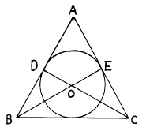
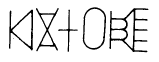

보석가공기능사 (2002-07-21 기출문제)
1과목: 보석재료
1. 다음 중 양질의 에메랄드를 산출하는 최대의 산지는?
- 브라질
- 콜롬비아
- 아프리카
- 소련
(정답률: 알수없음)

2. 1900년대 초 베르누이에 의한 합성루비의 방법은?
- 화염 용융법(Flame-fusion)
- 플럭스법(Flux-Growth)
- 수열법(Hydrothermal)
- 스컬멜트(Skull Melt)
(정답률: 알수없음)
3. 보석연마에 쓰이는 연마제의 입자크기는 대개 메쉬(mesh) 또는 마이크론(Micron)의 단위로 표시되어 있다. 이에 대한 설명 중 옳은 것은?
- 메쉬는 그 수치가 크면 클수록 입자는 더 거칠다.
- 마이크론은 그 표시수치가 크면 클수록 입자의 크기는 더 거칠다.
- 양자의 표시수치는 같다.
- 양자의 수치는 서로 역비관계로 마이크론이 5 이면 메쉬는 1/5 이다.
(정답률: 알수없음)
4. 강옥석을 주석판에 광택낼 때 주로 사용되는 광택제는?
- 다이아몬드 파우더
- 트리폴리
- 세륨옥사이드
- 틴옥사이드
(정답률: 알수없음)
5. 수정류의 결정계는?
- 육방정계
- 등축정계
- 정방정계
- 사방정계
(정답률: 알수없음)
6. 분산(dispersion)에 관한 설명 중 맞는 것은?
- 돌의 색상량이다.
- 백색광이 두갈래로 나누어 지는 현상이다.
- 백색광의 구성색이 분리하는 현상이다.
- 자외선광이 분리하는 현상이다.
(정답률: 알수없음)
7. 투명한 방해석의 결정을 통하여 아래쪽의 문자를 보면 이중으로 보인다. 이러한 현상은?
- 광학적 등방성이라 한다.
- 더블링(doubling)이라 한다.
- 편광이라 한다.
- 빛의 진동이라 한다.
(정답률: 알수없음)
8. 다음 중 육방정계에 해당하지 않는 보석은?
- 루비
- 사파이어
- 에메럴드
- 스피넬
(정답률: 알수없음)
9. 다음 다이아몬드에 관한 설명 중 잘못된 것은?
- 등축정계로 결정된다.
- 흑연과 마찬가지로 주성분은 탄소로 이루어져 있다.
- 고온, 고압의 지하깊은 곳에서 생성된다.
- 일정한 원자 구조를 갖지 않고 있다.
(정답률: 알수없음)
10. 페리도트의 주된 색은?
- 황색
- 황녹색
- 청색
- 암녹색
(정답률: 알수없음)
11. 다음 중 광물이라고 부를 수 없는 것은?
- 루비
- 에메랄드
- 합성사파이어
- 비취
(정답률: 알수없음)
12. 다음 합성보석에 관한 설명 중 잘못된 것은?
- 천연과 똑같은 화학성분을 가지고 있다.
- 천연과 똑같은 물리적 특성을 가지고 있다.
- 천연과 똑같은 광학특성을 가지고 있다.
- 천연과 똑같은 내포물을 가지고 있다.
(정답률: 알수없음)
13. 다음 유기물 중 화학성분이 전혀 다른 것은?
- 산호
- 진주
- 조개
- 호박
(정답률: 알수없음)
14. 다음 연마제 중 성질이 다른 하나는?
- 실리콘카바이트
- 탄화규소
- 카보런덤
- 린데 A
(정답률: 알수없음)
15. 샌딩작업을 위한 샌더의 형태별 종류와 관계 없는 것은?
- 디스크형
- 드럼형
- 벨트형
- 수직형
(정답률: 알수없음)
16. 루비와 합성루비의 더블릿(이중석)을 구별할 수 있는 가장 중요한 검사법은?
- 비중
- 굴절율
- 형광
- 확대
(정답률: 알수없음)
17. 첨정석 폴리싱에 알맞는 것은?
- 주철판에 다이아 콤파운드
- 루싸이드판에 산화세륨
- 페놀릭판에 산화주석
- 플라스틱판에 산화크롬
(정답률: 알수없음)
18. 공작석의 녹색 발색소는?
- 크롬
- 구리
- 코발트
- 철
(정답률: 알수없음)
19. 회황색 또는 회갈색으로 캐언곰(cairngorm)이라고도 하는 수정은?
- 황수정
- 연수정
- 백수정
- 자수정
(정답률: 알수없음)
20. 수정과 유리를 착색 접착제로 접합한 것은?
- 트리플릿
- 금박
- 더블릿
- 에나멜
(정답률: 알수없음)
2과목: 보석가공
21. 다음 그림과 같은 정삼각형에 내접원을 그릴때 제일 먼저해야할 사항은?

- 정삼각형의 두내각을 2등분하여 교점 0을 얻는다.
- 교점0를 중심으로 OD를 반지름으로 한 원을 그린다.
- 두각과 0를 이은선을 연장하여 점D와 E를 얻는다.
- 임의의 원을 그린다.
(정답률: 알수없음)
22. 에메랄드의 크라운 메인과 퍼빌리언 메인의 커팅 각도는?
- 크라운 메인 42°, 퍼빌리언 메인 43°
- 크라운 메인 38°, 퍼빌리언 메인 41°
- 크라운 메인 40°, 퍼빌리언 메인 42°
- 크라운 메인 43°, 퍼빌리언 메인 44°
(정답률: 알수없음)
23. 보석의 견인성(Toughness)에 대한 설명 중 올바른 것은?
- 어떤 물질의 긁힘 또는 마멸에 대한 저항을 말한다.
- 시간이 지남에 따라 퇴색되는 것을 말한다.
- 어떤 방향으로 쉽게 쪼개지는 것을 말한다.
- 보석이 깨지는 것에 대한 저항을 말한다.
(정답률: 알수없음)
24. 스텝형에 대한 설명 중 잘못된 것은?
- 에메랄드를 스텝형으로 가장 많이 가공한다.
- 보석의 색을 가장 잘 살려주는 연마형이다.
- 계단컷이라고도 불리운다.
- 불투명한 보석을 연마할 때 주로 사용하는 형이다.
(정답률: 알수없음)
25. 디자인을 할 때 평화로운 감정을 살리려면 다음 어느 것에 주력해야 하는가?
- 리듬
- 조화
- 대조
- 강조
(정답률: 알수없음)
26. 다음 영문을 소재로 한 그림은 시각의 법칙에서 무슨 원리를 적용한 것인가?

- 접근의 원리
- 동등의 원리
- 폐쇄의 원리
- 대칭성의 원리
(정답률: 알수없음)
27. 색료혼합의 결과에 대한 설명 중 올바른 것은?
- 명도는 높아지고 채도는 낮아진다.
- 명도, 채도가 모두 낮아진다.
- 명도는 낮아지고 채도는 높아진다.
- 명도, 채도가 모두 높아진다.
(정답률: 알수없음)
28. 다음 중 버니어캘리퍼스의 용도가 아닌 것은?
- 안지름측정
- 깊이측정
- 원호측정
- 길이측정
(정답률: 알수없음)
29. 황, 청, 적자의 3가지 필터를 모두 겹치면 빛이 투과하지 않기 때문에 어둡게 보이는 현상은?
- 감법혼색
- 가법혼색
- 병치가법혼색
- 중간혼색
(정답률: 알수없음)
30. 다음 중 원근화법에 의해 그려지는 도법은?
- 정투상도
- 등각투상도
- 표고투상도
- 투시도
(정답률: 알수없음)
31. 투상도법에 관한 설명 중 잘못된 것은?
- 투상법은 제3각법으로 작도함을 원칙으로 한다.
- 도면에 제1각법을 사용할 경우에는 제1각법이라 기입한다.
- 같은 도면에서는 제3각법과 제1각법을 혼용할 수 있다.
- 제3각법은 평면도 밑에 정면도, 정면도 우측에 우측 면도를 배치한다.
(정답률: 알수없음)
32. 라운드 브릴리언트형에 대한 설명 중 잘못된 것은?
- 크라운 메인면의 각도는 42° 이다.
- 스타각의 모서리와 윗거들면과의 폭은 45 : 55 % 비율이다.
- 굴절률이 높은 보석은 전체 높이가 70∼80%로 높아진다.
- 퍼빌리언 아랫거들의 각도는 메인각도 + 2∼3° 이다.
(정답률: 알수없음)
33. 다음 보석 중 초음파 세척기에 넣으면 가장 깨어지기 쉬운 보석은?
- 다이아몬드
- 에메랄드
- 사파이어
- 비취
(정답률: 알수없음)
34. 대절단한 원석의 금긋기 작업에 관한 설명 중 거리가 먼 것은?
- 원석의 균열, 내포물 모양, 특징 등을 고려한다.
- 캐보션형으로 연마하는 반투명, 불투명석을 절단하는 데 주로 사용한다.
- 원석의 가치를 최대한 살려 소절단하기 위한 예비 작업이다.
- 파세트(facet)연마에서 투명석을 절단하는데 주로 사용한다.
(정답률: 알수없음)
35. 구형(sphere)을 연마하기 위한 일반적인 환옥기의 적합한 회전 속도는?
- 100∼150회(r.p.m.)
- 150∼500회(r.p.m.)
- 650∼750회(r.p.m.)
- 800∼950회(r.p.m.)
(정답률: 알수없음)
36. 디자인의 원리 중 형과 색의 반복으로 운동감을 느끼게 하고 생명감을 일으키는 것은?
- 비례
- 대칭
- 율동
- 균형
(정답률: 알수없음)
37. 상품을 크게 보이기 위한 포장지의 색상은?
- 분홍색
- 파랑색
- 고동색
- 보라색
(정답률: 알수없음)
38. 8면체 다이아몬드의 절단방향은 몇 방향인가?
- 8
- 6
- 4
- 3
(정답률: 알수없음)
39. 보석 절단시 초경림에 의한 절단이 적절한 보석은?
- 칼세도니
- 수정
- 오팔
- 마노
(정답률: 알수없음)
40. 드릴링에 사용하는 연마제로 가장 적합한 것은?
- 테레빈
- 산화크롬
- 카보런덤
- 산화제이철
(정답률: 알수없음)
3과목: 보석감정
41. 루페를 이용한 검사방법이 잘못된 것은?
- 조명은 형광등형의 책상램프가 효과적이다.
- 전반사되는 빛을 이용하여 검사한다.
- 검사시에는 흔들림이 없어야 한다.
- 20배 루페의 초점거리는 1＂(2.54㎝)이다.
(정답률: 알수없음)
42. 안전점검의 방법에 대한 설명 중 잘못된 것은?
- 점검시 누락사항이 없어야 한다.
- 점검기준은 안전관계법규에 정해두어야 한다.
- 자체 점검기준, 재해사례 등의 방지대책을 채택한다.
- 대조표를 만드는 것은 긴 시간이 소요되므로 비능률적이다.
(정답률: 알수없음)
43. 가락지 연마 순서가 올바른 것은?
- 절단 - 천공 - 그라인딩 - 샌딩 - 광택
- 절단 - 천공 - 샌딩 - 그라인딩 - 광택
- 천공 - 절단 - 그라인딩 - 샌딩 - 광택
- 천공 - 절단 - 샌딩 - 그라인딩 - 광택
(정답률: 알수없음)
44. 큰 원석을 슬랩(slab)형으로 대절단하는데 사용되는 절단기는?
- 소 절단기
- 중소 절단기
- 중 절단기
- 대 절단기
(정답률: 알수없음)
45. 패싯 보석 연마기에 베어링을 교체한 후 플랜지와 베어링 사이의 적합한 간격은?
- 0.5-1mm
- 2-3mm
- 3.5-4mm
- 4.5-5mm
(정답률: 알수없음)
46. 모스 경도로 수정의 경도는?
- 10
- 9
- 8
- 7
(정답률: 알수없음)
47. 다음 중 다색성이 있는 것은?
- 다이아몬드
- 질콘
- 가아넷
- 첨정석
(정답률: 알수없음)
48. 천연호박에 열 반응을 검사할 때의 냄새는?
- 단백질 타는 냄새
- 석유 타는 냄새
- 머리카락 타는 냄새
- 송진 타는 냄새
(정답률: 알수없음)
49. 보석이 나타내는 색에 관한 설명 중 틀린 것은?
- 베릴은 녹색, 청색, 황색 등을 나타내는 타색광물이다.
- 토파즈는 청색만을 나타내는 자색광물이다.
- 로도나이트는 적색-핑크색을 나타내는 자색광물이다.
- 지르콘은 적색, 황색, 녹색 등을 나타내는 타색광물이다.
(정답률: 알수없음)
50. 다이아몬드 클래리티(투명도)등급 결정에 쓰이는 국제적인 표준 확대는?
- 5배
- 10배
- 20배
- 30배
(정답률: 알수없음)
51. 다음 보석재 중 경도가 가장 큰 것은?
- 스피넬
- 루비
- 옥
- 다이아몬드
(정답률: 알수없음)
52. 다음 비중에 관한 설명 중 맞는 것은?
- 비중은 밀도를 의미한다.
- 비중을 측정할 때에 물의 온도는 섭씨 30℃ 이어야한다.
- 수정의 비중은 4이다.
- 루비와 에머럴드가 같은 1캐럿이라면 부피는 루비가 크다.
(정답률: 알수없음)
53. 칼세도니(chalcedony)의 변종이 아닌 것은?
- 모-스 아게이트(moss agate)
- 크리소라이트(chrysolite)
- 크리소프레이스(chrysoprase)
- 카닐리언(carnelian)
(정답률: 알수없음)
54. 표준 굴절계로 측정할 수 있는 굴절율의 범위는?
- 1.30 - 1.81
- 1.30 - 1.90
- 1.33 - 1.81
- 1.40 - 1.83
(정답률: 알수없음)
55. 다음 중 특징적인 내포물과 보석이 올바르게 짝지어진 것은?
- 페리도트 - 수련엽상 내포물
- 커런덤 - 지네 모양의 내포물
- 에메랄드 - 말꼬리 모양의 내포물
- 호박 - 교차 침상 내포물
(정답률: 알수없음)
56. 클래러티 등급감정에 관한 설명 중 옳은 것은?
- 좁쌀 같은 작은 백색 결정체 1개가 10배율의 루페로 테이블 바로 아래에서 보이면 VVS1등급이다.
- 다이아몬드 직경의 2/3 정도인 긴 페더를 포함하여 매우 많은 내포물이 육안으로 보이면 I1 등급이다.
- 테이블 업 상태에서는 보이지 않지만, 테이블 다운상태에서 육안으로 보이는 페더가 있으면 SI2 등급이다.
- 현미경의 10배율에서 겨우 보이는 작은 핀포인트가 두 개 있으면 VS2 등급이다.
(정답률: 알수없음)
57. 어벤추레센스(Aventurescence: Av) 현상이 나타나지 않는 돌은?
- 선스톤
- 어벤추린 쿼츠
- 아이리스 아게이트
- 골드스톤
(정답률: 알수없음)
58. 천연루비와 합성루비를 구분할 수 있는 가장 중요한 검사는?
- 굴절율 검사
- 확대 검사
- 편광 검사
- 이색성 검사
(정답률: 알수없음)
59. 자외선 형광 검사에 관한 설명이다. 맞는 것은?
- 장파로365nm , 단파로243.7nm를 사용한다.
- 비교석으로는 플레임퓨전 방식의 합성루비가 적당하다.
- 합성오팔은 천연 화이트 오팔보다 더 오래 인광을 발한다.
- 오일침투나 염색여부는 검사할 수 없다.
(정답률: 알수없음)
60. 다이아몬드 작도에 대한 설명 중 틀린 것은?
- 거들에 있는 내추럴은 크라운 그림에 그린다.
- 다이아몬드 작도는 다이아몬드 등급결정시 기준으로 삼을 수 있다.
- 엑스트라 패싯은 흑색 실선으로 그린다.
- 엑스트라 패싯과 내추럴은 반드시 작도되어야 한다.
(정답률: 알수없음)